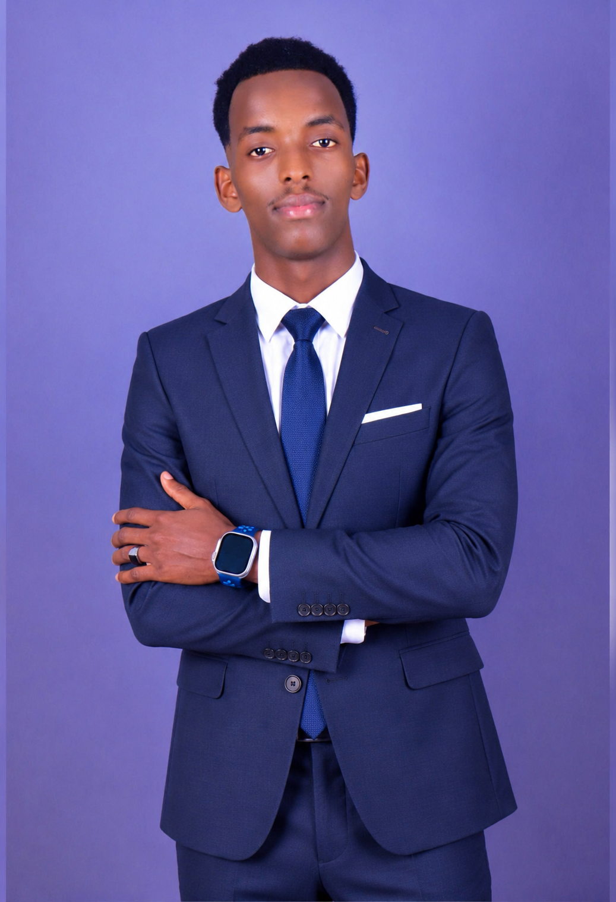

Waxaan ku noolahay magaalo qurux badan oo leh jawi deggan iyo dad dabeecad wanaagsan, taas oo iga caawisa inaan maalin kasta ku bilaabo xamaasad iyo firfircooni. Marka laga yimaado nolosha caadiga ah ee magaalada, waxaan ahay qof aad u jecel akhriska buugaagta, gaar ahaan kuwa ka hadla horumarinta nafta iyo taariikhda, sababtoo ah waxay ii furaan daaqado cusub oo aqooneed. Sidoo kale, waxaan aad u xiiseeyaa ku raaxaysiga dabeecada, socodka xilliga galabtii, iyo barashada xirfado cusub oo dhanka tignoolajiyada ah. Hiwaayadahani waxay noloshayda u yeelaan midab iyo macno gaar ah, waxayna igu dhiirrigeliyaan inaan mar walba naftayda horumariyo. semesterka 2aad.